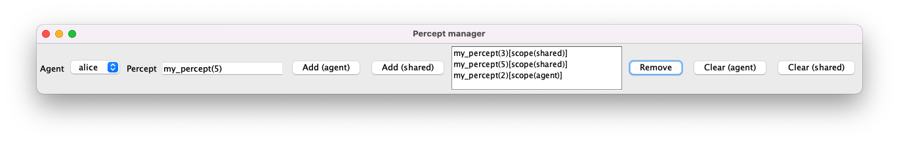
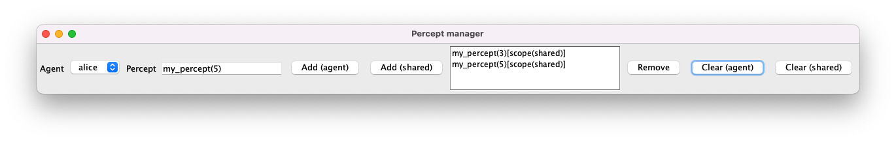

This appendix provides a brief introduction to implementing graphical user interfaces for Jason projects. Such interfaces are typically spawned from a custom environment class, so you should complete Appendix A before proceeding.
Create a new Jason project in Eclipse called appendix_b.
Create a new custom environment class file called MyEnvironment.java:
package appendix_b;
import jason.environment.Environment;
public class MyEnvironment extends Environment {
@Override
public void init(String[] args) {
}
}
Create a new agent file called interface_agent.asl:
/* Initial beliefs and rules */
/* Initial goals */
/* Plans */
+my_percept(X)[source(Y)] : true <- .print("Belief added: ", my_percept(X)[source(Y)]).
-my_percept(X)[source(Y)] : true <- .print("Belief deleted: ", my_percept(X)[source(Y)]).
According to this agent file the agent will print a message whenever a belief of the form my_percept(X) is added or deleted from its belief base.
Edit the Jason configuration file as follows:
MAS appendix_b {
infrastructure: Centralised
environment: appendix_b.MyEnvironment
agents:
alice interface_agent;
bob interface_agent;
aslSourcePath:
"src/asl";
}
Run the Jason project.
The Jason console should launch but no message should appear. The reason is that agents alice and bob are purely reactive; if a belief of the form my_percept(X) is never added or deleted from their belief base then they will do nothing. Later we will seek to trigger this behaviour via a graphical user interface.
The most common approach to implementing graphical user interfaces in Jason is to use an existing Java widget toolkit, such as Swing or SWT. This is the approach typically used by Jason example/demo implementations available online.
With the src/java directory in the Jason project highlighted in Eclipse select File > New > Class.
Enter MyWindow in the Name field and select Finish.
A new Java file should be automatically created at src/java/appendix_b/MyWindow.java. Edit the file as follows:
package appendix_b;
import java.awt.event.ActionEvent;
import java.awt.event.ActionListener;
import javax.swing.DefaultListModel;
import javax.swing.JButton;
import javax.swing.JComboBox;
import javax.swing.JFrame;
import javax.swing.JLabel;
import javax.swing.JList;
import javax.swing.JPanel;
import javax.swing.JScrollPane;
import javax.swing.JTextField;
import jason.asSyntax.ASSyntax;
import jason.asSyntax.Literal;
import jason.asSyntax.parser.ParseException;
public class MyWindow {
MyEnvironment myEnv;
String[] myAgents;
JComboBox<String> agentComboBox;
DefaultListModel<Literal> perceptListModel;
JList<Literal> perceptList;
JTextField addTextfield;
public MyWindow(MyEnvironment env, String[] agents) {
myEnv = env;
myAgents = agents;
agentComboBox = new JComboBox<String>(myAgents);
agentComboBox.addActionListener(new ActionListener() {
public void actionPerformed(ActionEvent e) {
@SuppressWarnings("unchecked")
JComboBox<String> eComboBox = (JComboBox<String>) e.getSource();
String agent = (String) eComboBox.getSelectedItem();
refreshPerceptList(agent); // Refresh the scroll pane whenever the user interacts with the combo box
}
});
perceptListModel = new DefaultListModel<Literal>();
String agent = (String) agentComboBox.getSelectedItem();
refreshPerceptList(agent);
perceptList = new JList<Literal>(perceptListModel);
perceptList.setVisibleRowCount(4);
addTextfield = new JTextField("my_percept(1)", 15);
JButton addAgentButton = new JButton("Add (agent)");
addAgentButton.addActionListener(new ActionListener() {
public void actionPerformed(ActionEvent e) {
try {
String agent = (String) agentComboBox.getSelectedItem();
Literal percept = ASSyntax.parseLiteral(addTextfield.getText());
percept.addAnnot(ASSyntax.parseTerm("scope(agent)")); // Add custom annotation to explicitly identify percepts in the GUI
myEnv.addPercept(agent, percept); // Add percept for the selected agent
refreshPerceptList(agent);
} catch (ParseException e1) {
e1.printStackTrace();
}
}
});
JButton addSharedButton = new JButton("Add (shared)");
addSharedButton.addActionListener(new ActionListener() {
public void actionPerformed(ActionEvent e) {
try {
String agent = (String) agentComboBox.getSelectedItem();
Literal percept = ASSyntax.parseLiteral(addTextfield.getText());
percept.addAnnot(ASSyntax.parseTerm("scope(shared)")); // Add custom annotation to explicitly identify shared percepts in the GUI
myEnv.addPercept(percept); // Add shared percept
refreshPerceptList(agent);
} catch (ParseException e1) {
e1.printStackTrace();
}
}
});
JButton removeButton = new JButton("Remove");
removeButton.addActionListener(new ActionListener() {
public void actionPerformed(ActionEvent e) {
if (!perceptList.isSelectionEmpty()) {
String agent = (String) agentComboBox.getSelectedItem();
Literal percept = (Literal) perceptList.getSelectedValue();
String scope = percept.getAnnot("scope").getTerm(0).toString(); // Retrieve the custom annotation to determine what method to call
if (scope.equals("agent")) {
myEnv.removePercept(agent, percept); // Remove percept for the selected agent
} else {
myEnv.removePercept(percept); // Remove shared percept
}
refreshPerceptList(agent);
}
}
});
JButton clearAgentButton = new JButton("Clear (agent)");
clearAgentButton.addActionListener(new ActionListener() {
public void actionPerformed(ActionEvent e) {
String agent = (String) agentComboBox.getSelectedItem();
myEnv.clearPercepts(agent); // Clear percepts for the selected agent
refreshPerceptList(agent);
}
});
JButton clearSharedButton = new JButton("Clear (shared)");
clearSharedButton.addActionListener(new ActionListener() {
public void actionPerformed(ActionEvent e) {
String agent = (String) agentComboBox.getSelectedItem();
myEnv.clearPercepts(); // Clear shared percepts
refreshPerceptList(agent);
}
});
JPanel panel = new JPanel();
panel.add(new JLabel("Agent"));
panel.add(agentComboBox);
panel.add(new JLabel("Percept"));
panel.add(addTextfield);
panel.add(addAgentButton);
panel.add(addSharedButton);
panel.add(new JScrollPane(perceptList));
panel.add(removeButton);
panel.add(clearAgentButton);
panel.add(clearSharedButton);
JFrame frame = new JFrame("Percept manager");
frame.getContentPane().add(panel);
frame.pack();
frame.setVisible(true);
}
/*
* Refresh contents of the scroll pane based on the selected agent
*/
private void refreshPerceptList(String agent) {
perceptListModel.removeAllElements();
for (Literal p : myEnv.consultPercepts(agent)) {
perceptListModel.addElement(p);
}
}
}
This class uses standard widgets from Swing to implement a desktop window that integrates with the Jason virtual environment via event listeners.
According to the constructor, an instance of the class is initialised with an instance of our virtual environment and an array of agent names. The former allows us to conveniently access Jason functionality within the MyWindow class itself, while the latter allows us to make use of agent names within the interface.
The final step is to spawn the interface from within the init method of the virtual environment class.
Add the following lines to the init method of MyEnvironment.java:
String[] agents = {"alice", "bob"};
new MyWindow(this, agents);
The line new MyWindow(this, agents) spawns the new interface by passing the current environment (this) along with an array of agents names (agents).
Note: Details on how to access the list of agent names automatically can be found in the Jason FAQ.
Run the Jason project.
The following window called Percept manager should appear:
The empty box in the centre displays a selectable list of percepts for the agent highlighted in the dropdown menu to the far left. Initially alice is highlighted and she has no percepts.
The box displaying my_percept(1) is an editable text field that allows you to enter any arbitrary percept, which can then be added as a percept of the highlighted agent using the Add (agent) button, or as a shared percept for all agents using the Add (shared) button.
Select the Add (agent) button. An annotated percept my_percept(1)[scope(agent)] should appear in the list, where scope(agent) is a custom annotation used by the interface to distinguish agent percepts from shared percepts.
The Jason console should also display the following message:
[alice] Belief added: my_percept(1)[source(percept)]
Edit the text field to my_percept(2) and select Add (agent). An annotated percept my_percept(2)[scope(agent)] should appear in the list.
[alice] Belief added: my_percept(2)[source(percept)]
Edit the text field to my_percept(3) and select Add (shared). An annotated percept my_percept(3)[scope(shared)] should appear in the list.
[bob] Belief added: my_percept(3)[source(percept)]
[alice] Belief added: my_percept(3)[source(percept)]
Select bob from the dropdown menu. The list should only display the shared percept my_percept(3)[scope(shared)].
Edit the text field to my_percept(4) and select Add (agent). An annotated percept my_percept(4)[scope(agent)] should appear in the list.
[bob] Belief added: my_percept(4)[source(percept)]
Edit the text field to my_percept(5) and select Add (shared). An annotated percept my_percept(5)[scope(shared)] should appear in the list.
[bob] Belief added: my_percept(5)[source(percept)]
[alice] Belief added: my_percept(5)[source(percept)]
Select alice from the dropdown menu. The list for alice should appear as before with the addition of the shared percept my_percept(5)[scope(shared)].
Select my_percept(1)[scope(agent)] from the list and select Remove. The percept should be removed from the list.

[alice] Belief deleted: my_percept(1)[source(percept)]
Select Clear (agent). All percepts with scope(agent) should be removed from the list.

[alice] Belief deleted: my_percept(2)[source(percept)]
Select bob from the dropdown menu. The list should appear as before.
Select Clear (shared). All percepts with scope(shared) should be removed from the list.
[bob] Belief deleted: my_percept(3)[source(percept)]
[bob] Belief deleted: my_percept(5)[source(percept)]
[alice] Belief deleted: my_percept(3)[source(percept)]
[alice] Belief deleted: my_percept(5)[source(percept)]
Select alice from the dropdown menu. The list should now be empty.
All functionality in the interface appears to be working as expected.
An alternative approach to implementing graphical user interfaces in Jason is to implement a custom API that exposes the Jason environment to external software. This approach is significantly more flexible, since you can then implement the graphical user interface using any programming language that is able to send HTTP requests (e.g. Javascript).
Javalin is a popular web framework for Java. It allows you run a web server that listens on specified endpoints for standard HTTP requests, such as GET and POST. In this way you can send and retrieve data to/from the Jason environment directly, providing data to populate your graphical user interface and allowing you to implement interactivity.
A pre-built version of Javalin (including dependencies) is available to download here.
With the Jason project highlighted in Eclipse select File > New > Folder.
Enter lib in the Folder name field and select Finish.
Drag the file javalin.jar to the new lib directory.
Right-click on lib/javalin.jar in Eclipse and select Build Path > Add to Build Path.
Edit MyEnvironment.java as follows:
package appendix_b2;
import io.javalin.Javalin;
import jason.environment.Environment;
public class MyEnvironment extends Environment {
@Override
public void init(String[] args) {
Javalin app = Javalin.create().start(7000);
}
}
Run the Jason project. The Jason console should display the following:
[main] INFO io.javalin.Javalin -
__ __ _
/ /____ _ _ __ ____ _ / /(_)____
__ / // __ `/| | / // __ `// // // __ \
/ /_/ // /_/ / | |/ // /_/ // // // / / /
\____/ \__,_/ |___/ \__,_//_//_//_/ /_/
https://javalin.io/documentation
[main] INFO org.eclipse.jetty.util.log - Logging initialized @1576ms to org.eclipse.jetty.util.log.Slf4jLog
[main] INFO io.javalin.Javalin - Starting Javalin ...
[main] INFO io.javalin.Javalin - Listening on http://localhost:7000/
[main] INFO io.javalin.Javalin - Javalin started in 367ms \o/
This confirms that Javalin is working correctly and listening on http://localhost:7000/.
A custom API based on Javalin can be implemented within the init method of the custom environment class. This requires you to specify some API endpoints, including how any data should be handled.
Edit MyEnvironment.java as follows:
package appendix_b2;
import java.util.ArrayList;
import java.util.Collection;
import io.javalin.Javalin;
import jason.asSyntax.ASSyntax;
import jason.asSyntax.Literal;
import jason.environment.Environment;
public class MyEnvironment extends Environment {
@Override
public void init(String[] args) {
Javalin app = Javalin.create().start(7000);
app.post("/percepts/add/:agent", ctx -> {
String agent = ctx.pathParam("agent");
Literal percept = ASSyntax.parseLiteral(ctx.body());
this.addPercept(agent, percept);
});
app.post("/percepts/add", ctx -> {
Literal percept = ASSyntax.parseLiteral(ctx.body());
this.addPercept(percept);
});
app.get("/percepts/:agent", ctx -> {
String agent = ctx.pathParam("agent");
Collection<Literal> percepts = this.consultPercepts(agent);
if (percepts == null) {
percepts = new ArrayList<Literal>();
}
ctx.result(percepts.toString());
});
app.post("/percepts/remove/:agent", ctx -> {
String agent = ctx.pathParam("agent");
Literal percept = ASSyntax.parseLiteral(ctx.body());
this.removePercept(agent, percept);
});
app.post("/percepts/remove", ctx -> {
Literal percept = ASSyntax.parseLiteral(ctx.body());
this.removePercept(percept);
});
app.post("/percepts/clear/:agent", ctx -> {
String agent = ctx.pathParam("agent");
this.clearPercepts(agent);
});
app.post("/percepts/clear", ctx -> {
this.clearPercepts();
});
}
}
Note: If you see an Eclipse error for
ctxyou may need to hover your cursor over the error and selectChange project compliance and JRE to 1.8.
This code implements the following API specification:
| Method | Endpoint | Data | Meaning |
|---|---|---|---|
| POST | /percepts/add/{agent} |
{percept} |
Add {percept} as a percept for {agent} |
| POST | /percepts/add |
{percept} |
Add {percept} as a shared percept |
| GET | /percepts/{agent} |
N/A | Get all percepts for {agent} |
| POST | /percepts/remove/{agent} |
{percept} |
Remove {percept} as a percept for {agent} |
| POST | /percepts/remove |
{percept} |
Remove {percept} as a shared percept |
| POST | /percepts/clear/{agent} |
N/A | Clear all percepts for {agent} |
| POST | /percepts/clear |
N/A | Clear all shared percepts |
These endpoints thus provide access to all Jason features used by the previous Swing interface.
The new API can be tested using the command-line tool cURL to issue appropriate HTTP requests.
In a terminal run the following command to add my_percept(1) as a percept for alice:
curl --request POST http://localhost:7000/percepts/add/alice --data "my_percept(1)"
The Jason console should display the following message:
[alice] Belief added: my_percept(1)[source(percept)]
Add my_percept(2) as a percept for alice:
curl --request POST http://localhost:7000/percepts/add/alice --data "my_percept(2)"
[alice] Belief added: my_percept(2)[source(percept)]
Add my_percept(3) as a shared percept:
curl --request POST http://localhost:7000/percepts/add --data "my_percept(3)"
[alice] Belief added: my_percept(3)[source(percept)]
[bob] Belief added: my_percept(3)[source(percept)]
Retrieve the percepts for alice:
curl --request GET http://localhost:7000/percepts/alice
[my_percept(3), my_percept(1), my_percept(2)]
Retrieve the percepts for bob:
curl --request GET http://localhost:7000/percepts/bob
[my_percept(3)]
Add my_percept(4) as a percept for bob:
curl --request POST http://localhost:7000/percepts/add/bob --data "my_percept(4)"
[bob] Belief added: my_percept(4)[source(percept)]
Add my_percept(5) as a shared percept:
curl --request POST http://localhost:7000/percepts/add --data "my_percept(5)"
[bob] Belief added: my_percept(5)[source(percept)]
[alice] Belief added: my_percept(5)[source(percept)]
Retrieve the percepts for bob:
curl --request GET http://localhost:7000/percepts/bob
[my_percept(3), my_percept(5), my_percept(4)]
Retrieve the percepts for alice:
curl --request GET http://localhost:7000/percepts/alice
[my_percept(3), my_percept(5), my_percept(1), my_percept(2)]
Remove my_percept(1) as a percept for alice:
curl --request POST http://localhost:7000/percepts/remove/alice --data "my_percept(1)"
[alice] Belief deleted: my_percept(1)[source(percept)]
Clear the percepts for alice:
curl --request POST http://localhost:7000/percepts/clear/alice
[alice] Belief deleted: my_percept(2)[source(percept)]
Clear the shared percepts:
curl --request POST http://localhost:7000/percepts/clear
[bob] Belief deleted: my_percept(3)[source(percept)]
[bob] Belief deleted: my_percept(5)[source(percept)]
[alice] Belief deleted: my_percept(3)[source(percept)]
[alice] Belief deleted: my_percept(5)[source(percept)]
At this stage a web interface can now be implemented using Javascript or your preferred web framework.
In this appendix we have seen two possible approaches to implementing graphical user interfaces for Jason projects. The first approach is to implement a desktop interface in Java using the Swing widget toolkit. The second is to embed a custom web API enabling a web interface to be implemented separately. The former is the most common approach taken by existing example/demo implementations available online, while the latter is more flexible and should be easier for those with web development experience.